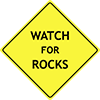

"Civilization exists by geological consent...subject to change without notice." -- Will Durant
Earthquake Info
Earth Science Info
Snow Pack Conditions
Useful Geology Links
Professional Organizations
Equipment, Tools, and Supplies
Geology Blogs
Geology YouTube
Geology Books and Maps
mike@mikesisk.com